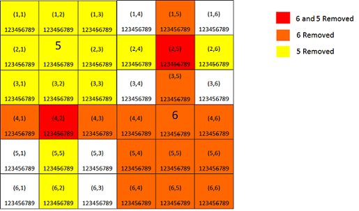

Any Sudoku fans out there? This cool little combinatorial puzzle has been around for thousands of years in many different forms, but the most popular version that we know of today gained a mainstream audience only within the last decade. Most people believe that the game originated in Japan, but earliest records indicate that during the 18th century, the genius, Swedish mathematician Leonhard Euler began formulating a number puzzle very similar to the Sudoku we know today.
So why all this talk about Sudoku? Well, it turns out that the solution to the puzzles that most people reason out in their heads can be conveniently constructed into a computer algorithm that can solve any Sudoku in fractions of a second. And better yet, we can implement the solution in our favorite programming language - C#!
Source Code Version: Visual Studio 2013 .Net 4.5
This code will not be the exact same as the code presented here. It has a few additional optimizations that don’t assist in our search for knowledge and edification. However, it should be easy to follow the logic discussed here.
First, let’s think about the algorithm before we begin coding. If you’ve never played Sudoku before, here is the objective:
Fill a 9x9 grid with digits so that each column, each row, and each of the nine 3x3 sub-grids that compose the grid (also called “boxes”, “blocks”, “regions”, or “sub-squares”) contains all of the digits from 1 to 9.
Simple, right? So essentially the sequence of our game is as follows:
This is the basic skeleton of our algorithm. In fact, with just this algorithm we can find a solution to every Sudoku puzzle. The problem, is that there are 6.67x1021 solutions to a Sudoku grid, so letting our program just fumble around guessing solutions is probably not something we’re going to hang around for. The question is, can we make our program’s job easier? And the answer is “Yes.”
At the heart of Sudoku is essentially a decision optimziation problem. Currently our sequence doesn’t seem to do anything intelligent with its guesses. It just randomly picks a square, and then randomly picks a number, but what if we could add some intelligence to those guesses. Instead of picking a random square, it would make more sense to only pick squares that give us the greatest possibility of being right. This allows us to minimize the number of incorrect guesses, which will reduce the number of times we need to backtrack, ultimately improving the performance of our solution. There are many decision optimization problems that can be solved using this technique. Check out the Dancing Links algorithm created by Donald Knuth for a more general approach to solving problems like this.[1]
So, how do we do this? Well, first, let’s look at the minimzation (also read optimization) problem before us. If we are minimizing our problem space, then that means there must be a set of constraints (or rules) that we must adhere to in order for our decision to be optimal, and since we know the rules of the game, let’s start there.
Each cell can only have one digit between 1 and 9.
Each row must contain digits 1 to 9.*
Each column must contain digits 1 to 9.*
Each region must contain digits 1 to 9.*
*Since each row, column and region contains 9 cells, this also implies that there are no repeated digits
I imagine this as a scratchoff card for each cell, where each card has the numbers 1 to 9. From this point on let’s change the arbitrary and ambiguous term numbers to candidates. This will make it clear that we are making a decision among a collection of choices. Now, as we apply the constraints, we can scratchoff candidates that don’t belong. Now imagine the row, column, and region constraints as a series of blocks that prevent us from placing certain numbers in their areas. So when a number is placed on the grid, we now have a block placed on that number in the corresponding row, column and region. Let’s further clarify this analogy with a graphic.

This graphic shows a 3x3 region of cells, with their candidates listed in each cell. It then shows the first row, column, and region; and the constraints placed in those regions. So, if we restrict the cells in this region according to these constraints, we find that our choices begin to narrow rather quickly. For example, in the first column, we went from a possible 9 candidates, to only 3 with only a region’s worth of information. Now, armed with all the information from the entire board we can solve most Sudoku puzzles with little to no backtracking.
The next design consideraton is actually an add-on to the last section. It has to do with maintaining the puzzle’s constraints. So we’ve selected a good set of constraints to optimize our decision making process, and after applying that to our board, we’ve “nearly” got a complete solution. However, it seems that each time we make a decision the board that we previously optimized is no longer valid. Why? Well, because each decision made changes the state of the board, thus making the previous constraints out-of-date. What we need is the information for each selection to be shared with all cells affected. Well, we know that the cells in the row, column, and region of the selected cells will now have an additional constraint based on the candiate placed in the selected cell. Thus, we can ensure that they all have this information by “rippling” the new information across those cells. This technique is known as constraint propagation, a powerful optimization techinque used to solve complex decision problems where choices have consequences that “ripple” across the solution space.[2]

One key point to note here is that once we’ve finished pruning the board, we never need to do it again, as long as we accurately maintain the state of the board through constraint propagation. This means that we must keep track of the changed cells after each selection, so that if we need to backtrack, we can simply restore the changed cells.
And lastly comes the most crucial step to the Sudoku algorithm - backtracking. The idea is simple enough. Keep placing numbers in squares until our constraints tell us we can’t do that. Now, once they tell us we can’t do that, and there are no other possible candidates left for that square, it’s time to try a new approach, so we will back up until we reach the previous “fork” in the road, which is to say, we backtrack until we reach a cell with an unselected candidate. This means we need to keep track of previous states so that we can easily undo changes we’ve made. If you’re thinking this smells like recursion, then you’re definitely tracking the right scent. To complete the design, we’ve got one more diagram that shows part of an initial solution, where the decisions led it to a dead end (an unsolvable path), so it backtracks to the first new path.
Now for the fun part! Hopefully, after reading the above design approach the idea is clear enough that should you feel sufficiently motivated, you could go out and design your own Sudoku solver without too much trouble.
I used a 9x9 integer array to represent the grid. The unsolved squares have the value 0, so I can easily tell if a square is unsolved.
Since keeping track of the constraints requires lots of indexing and counting, I created a class to implement an array of booleans (nice way to keep track of constraints) that can easily be indexed by the board numbers 1 - 9, and will keep track of the number of candidates that are true. It also implements the IEnumerable and IEnumerator interfaces so that I can easily iterate through the list of available candidates, which makes our use of the foreach statement easier to code and a bit more expressive. If you’re a bit hazy on the enumeration interfacese in C#, try this to get the nitty-gritty.[3]
Take a look at the initial code from my SudokuSolver class below:
// Convenience class for tracking candidates
class Candidate : IEnumerable
{
bool[] m_values;
int m_count;
int m_numCandidates;
public int Count { get { return m_count; } }
public Candidate(int numCandidates, bool initialValue)
{
m_values = new bool[numCandidates];
m_count = 0;
m_numCandidates = numCandidates;
for (int i = 1; i <= numCandidates; i++)
this[i] = initialValue;
}
public bool this[int key]
{
// Allows candidates to be referenced by actual value (i.e. 1-9, rather than 0 - 8)
get { return m_values[key - 1]; }
// Automatically tracks the number of candidates
set
{
m_count += (m_values[key - 1] == value) ? 0 : (value == true) ? 1 : -1;
m_values[key - 1] = value;
}
}
public void SetAll(bool value)
{
for (int i = 1; i <= m_numCandidates; i++)
this[i] = value;
}
public override string ToString()
{
StringBuilder values = new StringBuilder();
foreach (int candidate in this)
values.Append(candidate);
return values.ToString();
}
public IEnumerator GetEnumerator()
{
return new CandidateEnumerator(this);
}
// Enumerator simplifies iterating over candidates
private class CandidateEnumerator : IEnumerator
{
private int m_position;
private Candidate m_c;
public CandidateEnumerator(Candidate c)
{
m_c = c;
m_position = 0;
}
// only iterates over valid candidates
public bool MoveNext()
{
++m_position;
if (m_position <= m_c.m_numCandidates)
{
if (m_c[m_position] == true)
return true;
else
return MoveNext();
}
else
{
return false;
}
}
public void Reset()
{
m_position = 0;
}
public object Current
{
get { return m_position; }
}
}
}
And now the board, constraints, and other definitions.
// True values for row, grid, and region constraint matrices
// mean that they contain that candidate, inversely,
// True values in the candidate constraint matrix means that it
// is a possible value for that cell.
Candidate[,] m_cellConstraintMatrix;
Candidate[] m_rowConstraintMatrix;
Candidate[] m_colConstraintMatrix;
Candidate[,] m_regionConstraintMatrix;
// Actual puzzle grid (uses 0s for unsolved squares)
int[,] m_grid;
// Another convenience structure. Easy and expressive way
// of passing around row, column information.
struct Cell
{
public int row, col;
public Cell(int r, int c) { row = r; col = c; }
}
// helps avoid iterating over solved squares
HashSet<Cell> solved;
HashSet<Cell> unsolved;
// Tracks the cells changed due to propagation (i.e. the rippled cells)
Stack<HashSet<Cell>> changed;
public SudokuSolver(int[,] initialGrid)
{
m_grid = new int[9, 9];
m_cellConstraintMatrix = new Candidate[9, 9];
m_rowConstraintMatrix = new Candidate[9];
m_colConstraintMatrix = new Candidate[9];
m_regionConstraintMatrix = new Candidate[9, 9];
solved = new HashSet<Cell>();
unsolved = new HashSet<Cell>();
changed = new Stack<HashSet<Cell>>();
bucketList = new HashSet<Cell>[10];
steps = 0;
// initialize constraints
for (int row = 0; row < 9; row++)
{
for (int col = 0; col < 9; col++)
{
// copy grid, and turn on all Candidates for every cell
m_grid[row, col] = initialGrid[row, col];
m_cellConstraintMatrix[row, col] = new Candidate(9, true);
}
}
for (int i = 0; i < 9; i++)
{
m_rowConstraintMatrix[i] = new Candidate(9, false);
m_colConstraintMatrix[i] = new Candidate(9, false);
bucketList[i] = new HashSet<Cell>();
}
bucketList[9] = new HashSet<Cell>();
for (int row = 0; row < 3; row++)
for (int col = 0; col < 3; col++)
m_regionConstraintMatrix[row, col] = new Candidate(9, false);
InitializeMatrices();
PopulateCandidates();
}
As we discussed in the design, the code needs to make intelligent decisions based on relevant information. The relevant information in our Sudoku solver are constraints, and before we begin plugging away we need to minimize the number of choices by setting our constraints. This can be done by adding a constraint to the row, column, and region for every filled in square. We can then update our cell’s constraints by reducing the available candidates based on the row, cell, and region constraints discovered previously.
private void InitializeMatrices()
{
for (int row = 0; row < 9; row++)
{
for (int col = 0; col < 9; col++)
{
// if the square is solved update the candidate list
// for the row, column, and region
if (m_grid[row, col] > 0)
{
int candidate = m_grid[row, col];
m_rowConstraintMatrix[row][candidate] = true;
m_colConstraintMatrix[col][candidate] = true;
m_regionConstraintMatrix[row / 3, col / 3][candidate] = true;
}
}
}
}
private void PopulateCandidates()
{
//Add possible candidates by checking
//the rows, columns and grid
for (int row = 0; row < 9; row++)
{
for (int col = 0; col < 9; col++)
{
//if solved, then there are no possible candidates
if (m_grid[row, col] > 0)
{
m_cellConstraintMatrix[row, col].SetAll(false);
solved.Add(new Cell(row, col));
}
else
{
// populate each cell with possible candidates
// by checking the row, col, and grid associated
// with that cell
foreach (int candidate in m_rowConstraintMatrix[row])
m_cellConstraintMatrix[row, col][candidate] = false;
foreach (int candidate in m_colConstraintMatrix[col])
m_cellConstraintMatrix[row, col][candidate] = false;
foreach (int candidate in m_regionConstraintMatrix[row / 3, col / 3])
m_cellConstraintMatrix[row, col][candidate] = false;
Cell c = new Cell(row, col);
unsolved.Add(c);
}
}
}
}
Now that we have enough information about the board to make an optimal decision, we must MAKE THE DECISION. The best way to do this is to pick the cell with the least number of candidates, as this would obviously be the easiest decision to make. This requires that we search the grid for “a” minimum cell. Remeber there might be multiple cells with the same number of candidates. In that case, we just pick the first cell we find.
private Cell NextCell()
{
if (unsolved.Count == 0)
return new Cell(-1, -1); // easy way to singal a solved puzzle
Cell min = unsolved.First();
foreach (Cell cell in unsolved)
min = (m_cellConstraintMatrix[cell.row, cell.col].Count < m_cellConstraintMatrix[min.row, min.col].Count) ? cell : min;
return min;
}
In this explanation code I chose to use a shorter min-find approach, but in the source code example I use bucket lists to dynamically track the minimum after each cell selection. This allows my minimum lookup to take place in essentially one operation. This improved performance by about 25%, so implementation approach can definitely have a lot of weight on how your solution performs.
Although this code is likely the most complex looking in this section, selection and deselection are really just maintenance routines for managing the state of the board. Selecting/Deselecting the cell is not problematic, but updating all of the effected cells is a bit trickier. Upon selection, we need to iterate through the row, column, and region, and remove candidates from cells that contained the just selected candidate. The process is the same for unselecting a cell, except we are returning the candidate back to the previously changed cells. And thanks to the SelectCandidate routine this process is made simpler by only having to iterate through cells we know changed.
private void SelectCandidate(Cell aCell, int candidate)
{
HashSet<Cell> changedCells = new HashSet<Cell>();
// place candidate on grid
m_grid[aCell.row, aCell.col] = candidate;
// remove candidate from cell constraint matrix
m_cellConstraintMatrix[aCell.row, aCell.col][candidate] = false;
// add the candidate to the cell, row, col, region constraint matrices
m_colConstraintMatrix[aCell.col][candidate] = true;
m_rowConstraintMatrix[aCell.row][candidate] = true;
m_regionConstraintMatrix[aCell.row / 3, aCell.col / 3][candidate] = true;
/**** RIPPLE ACROSS COL, ROW, REGION ****/
// (propagation)
// remove candidates across unsolved cells in the same
// row and col.
for (int i = 0; i < 9; i++)
{
// only change unsolved cells containing the candidate
if (m_grid[aCell.row, i] == 0)
{
if (m_cellConstraintMatrix[aCell.row, i][candidate] == true)
{
// remove the candidate
m_cellConstraintMatrix[aCell.row, i][candidate] = false;
//update changed cells (for backtracking)
changedCells.Add(new Cell(aCell.row, i));
}
}
// only change unsolved cells containing the candidate
if (m_grid[i, aCell.col] == 0)
{
if (m_cellConstraintMatrix[i, aCell.col][candidate] == true)
{
// remove the candidate
m_cellConstraintMatrix[i, aCell.col][candidate] = false;
//update changed cells (for backtracking)
changedCells.Add(new Cell(i, aCell.col));
}
}
}
// (propagation)
// remove candidates across unsolved cells in the same
// region.
int grid_row_start = aCell.row / 3 * 3;
int grid_col_start = aCell.col / 3 * 3;
for (int row = grid_row_start; row < grid_row_start + 3; row++)
for (int col = grid_col_start; col < grid_col_start + 3; col++)
// only change unsolved cells containing the candidate
if (m_grid[row, col] == 0)
{
if (m_cellConstraintMatrix[row, col][candidate] == true)
{
// remove the candidate
m_cellConstraintMatrix[row, col][candidate] = false;
//update changed cells (for backtracking)
changedCells.Add(new Cell(row, col));
}
}
// add cell to solved list
unsolved.Remove(aCell);
solved.Add(aCell);
changed.Push(changedCells);
}
private void UnselectCandidate(Cell aCell, int candidate)
{
// 1) Remove selected candidate from grid
m_grid[aCell.row, aCell.col] = 0;
// 2) Add that candidate back to the cell constraint matrix.
// Since it wasn't selected, it can still be selected in the
// future
m_cellConstraintMatrix[aCell.row, aCell.col][candidate] = true;
// 3) Remove the candidate from the row, col, and region constraint matrices
m_rowConstraintMatrix[aCell.row][candidate] = false;
m_colConstraintMatrix[aCell.col][candidate] = false;
m_regionConstraintMatrix[aCell.row / 3, aCell.col / 3][candidate] = false;
// 4) Add the candidate back to any cells that changed from
// its selection (propagation).
foreach (Cell c in changed.Pop())
{
m_cellConstraintMatrix[c.row, c.col][candidate] = true;
}
// 5) Add the cell back to the list of unsolved
solved.Remove(aCell);
unsolved.Add(aCell);
}
And finally, we must be able to tell our solver to back up when it goes astray. This is implemented using recursion, but could also be implemented iteratively, with a bit more effort. This function gets the next cell and then tries to determine what candidate should go in that cell. Once it places a candidate, it goes to the next cell, and it keeps going until all the cells have been solved - we’re done - or we reach a dead end (we’ve used all the candidates). In the latter situation, it just continually calls the deselect method discussed previously until it reaches a cell with unselected candidates.
private bool SolveRecurse(Cell nextCell)
{
// Our base case: No more unsolved cells to select,
// thus puzzle solved
if (nextCell.row == -1)
return true;
// Loop through all candidates in the cell
foreach (int candidate in m_cellConstraintMatrix[nextCell.row, nextCell.col])
{
writer.WriteLine("{4} -> ({0}, {1}) : {2} ({3})", nextCell.row, nextCell.col,
m_cellConstraintMatrix[nextCell.row, nextCell.col], m_cellConstraintMatrix[nextCell.row, nextCell.col].Count, steps++);
SelectCandidate(nextCell, candidate);
// Move to the next cell.
// if it returns false backtrack
if (SolveRecurse(NextCell()) == false)
{
++steps;
writer.WriteLine("{0} -> BACK", steps);
UnselectCandidate(nextCell, candidate);
continue;
}
else // if we recieve true here this means the puzzle was solved earlier
return true;
}
// return false if path is unsolvable
return false;
}
Hopefully by now you’re feeling confident enough to solve any Sudoku puzzle using the algorithm design techniques discussed here. I also hope that you might find additional application of this decision optimization algorithm as it can be widely used to solve a myriad of very difficult real-world problems. In addition to looking at the code, you might want to try executing it a few times to see how it performs, and to watch the selection and backtracking process. As I’ll be the first to admit, my solution is not the most efficient solution out there, and there are a few links to other implementations.[4] One of the fastest I’ve seen is the kudoku implementation in C.[5] It claims to solve a 1000 hard sudoku problems in less than 2 seconds. If you were ever stumped at Sudoku before, now you know you don’t have to be ever again.